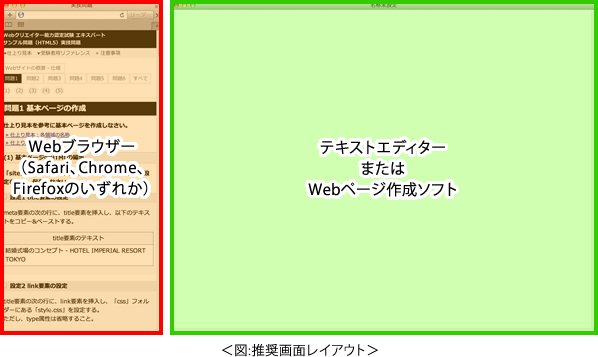
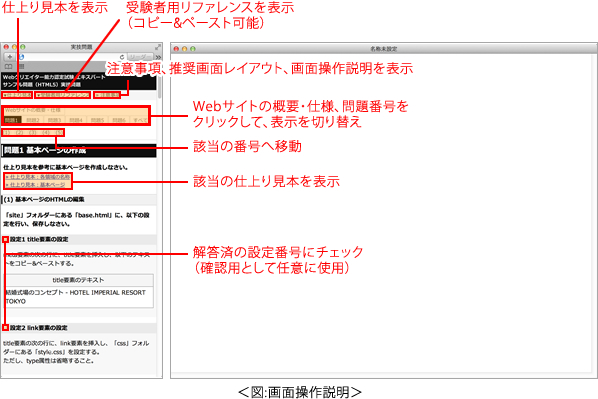

注意事項
実技問題を解答するにあたり、以下の注意事項に留意してください。
- 実技問題の制限時間は以下の通りです。
| ・テキストエディター使用の場合： |
110分 |
| ・Webページ作成ソフト使用の場合： |
90分 |
- 「実技用」フォルダーには解答するために必要なファイルが格納されています。問題の指示に従って使用してください。
- 各ファイルにあらかじめ記述してある内容について、問題文に指示がない場合は、追記や削除・修正を行わないでください。
- 記述を行う場合、英字・数字・記号は半角、カタカナは全角で記述してください。ただし、指示がある場合は、その指示に従ってください。
- URLは、すべて相対パスで記述してください。
- テキストおよびソースのコピー&ペーストについては、問題文からコピー&ペーストしてください。
- 受験者用リファレンスのHTMLやCSSなどの記述は、コピー&ペーストすることができます。必要に応じて利用してください。
- 仕上り見本は、デスクトップ用 Internet Explorer 11、Windows 8.1の環境で作成されています。
環境の違い（OSやWebブラウザーの種類・バージョン、フォントのインストール状況など）により、仕上り見本の表示と異なる場合がありますが、そのまま続行してください。
※ 試験問題に記載されている会社名又は製品名は、それぞれ各社の商標又は登録商標です。なお、試験問題では、® 及び ™ を明記していません。
推奨画面レイアウト
各ウィンドウの配置は、以下の推奨画面レイアウトを参考に配置してください。
- 実技問題では、Webブラウザー（Safari、Chrome、Firefoxのいずれか）、テキストエディターまたはWebページ作成ソフトの二つのウィンドウを同時に表示させておきます。
- 推奨する画面のレイアウトは＜図:推奨画面レイアウト＞の通りです。

- Webブラウザーと、テキストエディターまたはWebページ作成ソフトのウィンドウは、ドラッグすることにより位置や大きさを調整することができます。
- 実技問題操作練習を行う際にレイアウトを自由に設定できます。
画面操作説明
各ウィンドウ内のリンクやチェックボックスに関する操作は＜図：画面操作説明＞の通りです。
